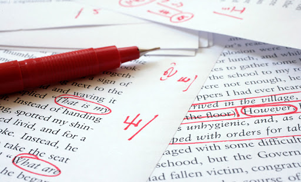
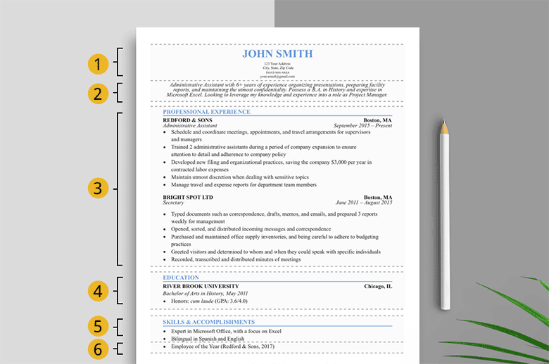

Tips for writing a resume
If there's one thing that really gets your foot in the door, it's what you put on your resume. Seems easy right? Just write about yourself and call it a day. Well actually, it can be a lot more than that. Below are essential tips for writing a great resume making sure you are successful come time for the job interview.
1. Think outside the box
Resumes are a tool to really give insight to an employer of the type of asset you can be for the company. While it's great to list your previous experiences with jobs, your major accomplishments in your life are imperative information as well. Employers want to understand just how valuable you are and what skills you possess therefore putting your past achievements will allow them to know you more than just putting your previous work experiences.
2. Keep it short and sweet

It is always important to remember that a resume should be short and always to the point. Your resume is mainly entailing how good you are for the certain job you are applying for. The rule of thumb is to have your resume no longer than a page. Unless it is absolutely crucial to include additional information, your resume shouldn't exceed more than a page long. Short and to the point always works in the end.
3. Honesty is the best policy
It may seem tempting to flatter yourself with how great you are and why you should work for the company you are applying for, and that's great! However, many people fail to distinguish glamorizing your abilities, and falsifying them. Say for example you write on your resume that you are good at public speaking, a skill that is not easy to master. Come time for the job interview, the employer already is under the assumption you are stellar in speaking when you really aren't. At the end of the day, lies will always come back to haunt you, so it's better to remain honest about yourself and to remember that employers value authenticity.
4. Check proof your work
It is absoultely crucial to always proof edit and read everything you do. Not everyone is perfect and we all make mistakes with certain things. First impressions are everything and your first impression actually starts with your resume. Your employer checks everything! Even your writing. It is best to make sure that everything you've written is correct that way you can avoid embarassment in the future. It will not only make you look more professional but you will also stand out because your employer sees that you take the smallest details into account which will be beneficial for you and the company you are working for. Attention to detail is everything!
5. Choose an appropriate template
Professionalism is vital to always maintain at the workplace. It all starts with the resume you submit. There may be really unique and creative fonts out there and those can be great to use! However, it's also important to understand what is professional and what isn't. The resume represents you, it is the document that showcases your abilities and past achievements, therefore it is imperative to make it as professional as you possibly can. That isn't to say you can't get creative, in fact employers love seeing creativtiy! There's an intricate balance that must be maintained with creativity and professionalism.